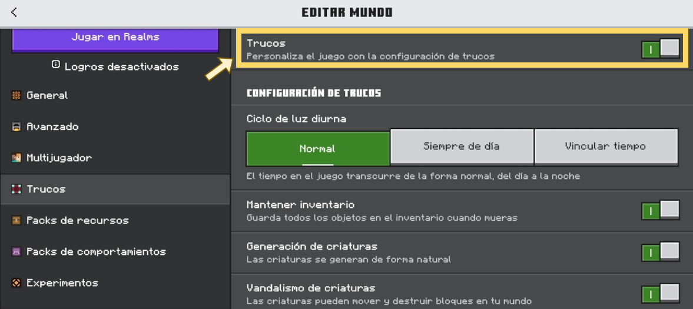
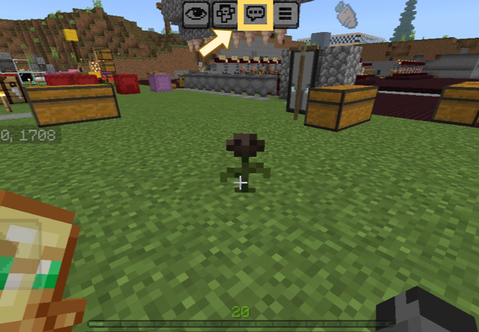
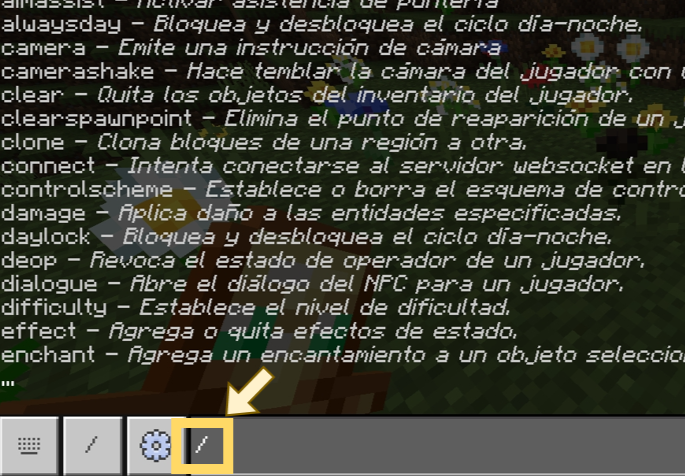
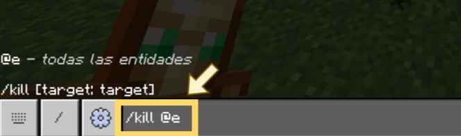

(^_^)
Bienvenido/a a esta guía en español para aprender a usar los comandos en Minecraft Bedrock (Android, iOS, Windows 10/11, Xbox, PS4/PS5 y Nintendo Switch).
Los comandos estarán organizados por secciones, los cuales encontrarás pulsando el botón de "Comandos".
Nota: La versión del juego en la que se probaron los comandos de esta guía es la 1.26.3.1.
Paso 1:
Para usar los comandos en Minecraft Bedrock debes activar primero los "trucos". Estos se pueden activar al crear el mundo o incluso después de crearlo, ya que aún se pueden habilitar desde los ajustes.
(Después de activar los "trucos", los logros se desactivarán automáticamente en ese mundo de forma permanente).

Paso 2:
Después de activar la opción de los “Trucos”, al entrar en tu mundo tienes que abrir el “chat” y escribir el símbolo “/” para poder usar los comandos.
(El signo “/” debe escribirse siempre primero para que el juego pueda ejecutar los comandos correctamente)
¿Cómo abrir el chat en las diferentes plataformas?
Android, iOS: Toca el icono de chat que está en la parte superior de la pantalla.
Windows10/11: Pulsa la tecla T.
Xbox, PS4/PS5, Nintendo Switch: Pulsa el botón D-Pad (flecha derecha).

Abrir el chat

Escribir el signo "/"
Una vez completados estos pasos, ya podrás hacer uso de los comandos que ofrece el juego :D
¿Qué son los selectores de objetivos?
Los selectores de objetivos son una forma de especificar a qué entidad afectará un comando. Se escriben utilizando el símbolo “@” seguido de una letra que determinará qué entidades serán afectadas.
Algunos comandos no utilizan selectores de objetivos, mientras que otros sí los requieren, como por ejemplo el comando /kill.
Ejemplo:
/kill @e

Este comando eliminará a todas las entidades alrededor, incluyendo ítems en el suelo.
| Selector | Funcionamiento |
|---|---|
| @a | todos los jugadores |
| @e | todas las entidades |
| @n | entidad más cercana |
| @p | jugador más cercano |
| @r | jugador aleatorio |
| @s | tú |
Aunque los selectores de objetivo ya permiten elegir a qué entidades afectará un comando, existe una forma aún más precisa de controlarlos.
Se trata de los Argumentos del selector, los cuales se escriben dentro de corchetes y permiten filtrar entidades según características específicas, como su tipo, nombre, distancia, etc...